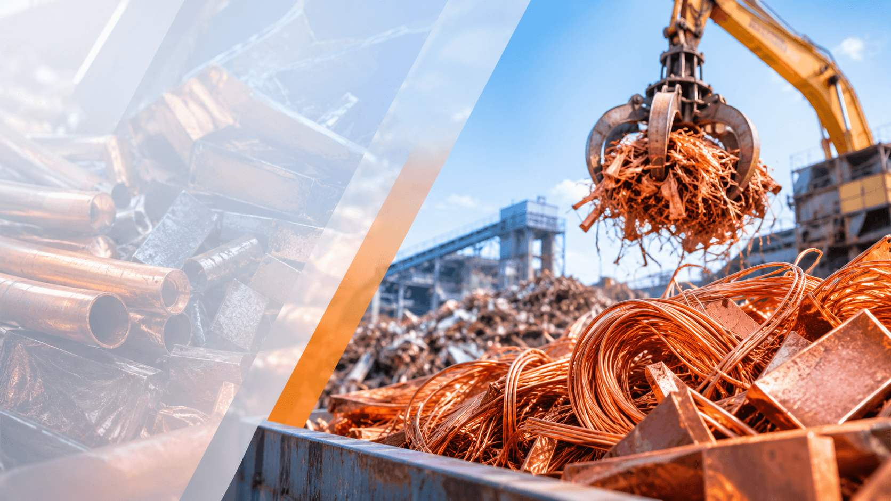
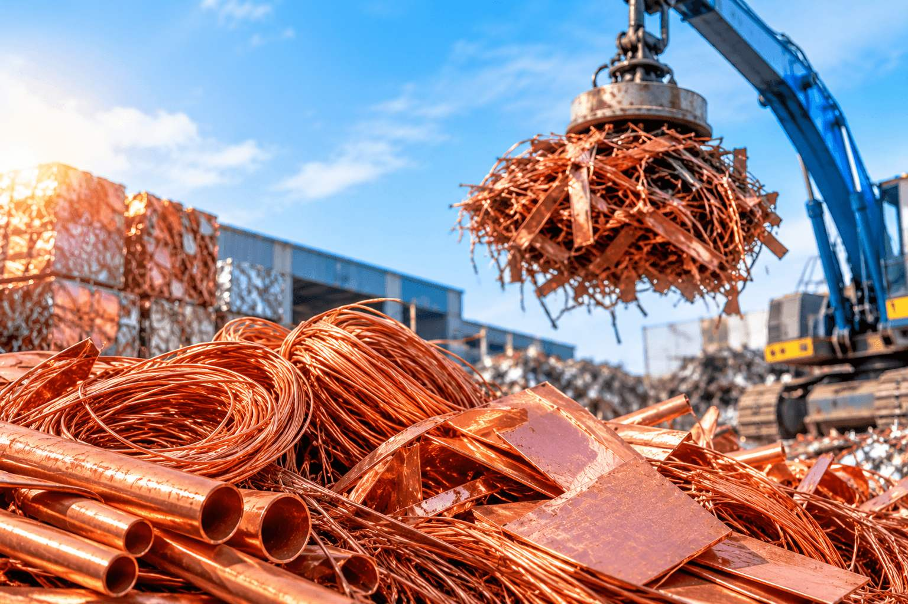
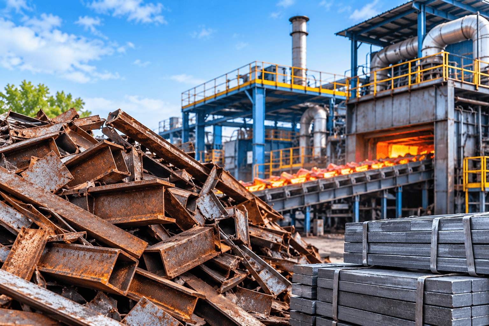

About Us
Transforming industrial scrap into high-purity secondary metals for a sustainable circular economy.
Decades of Metallurgical Mastery & Sustainable Innovation
Founded with a steadfast commitment to resource conservation, Ashiga AI Solution has evolved into one of the premier metal recycling and recovery enterprises. We bridge the gap between industrial waste streams and raw material demands by transforming complex copper-bearing residues, mixed non-ferrous scraps, and ferrous by-products into high-grade reusable resources.
Operating under strict statutory and environmental authorizations, our licensed facility handles an authorized capacity of over 3,08,306 MTPA. With more than 70 years of collective metallurgical heritage, our engineers deploy advanced shredding, density separation, eddy-current recovery, and pyrometallurgical refining lines that consistently deliver metal purities exceeding 99.8%.
"Transforming industrial scrap into high-purity reusable metals is not just our business—it is our definitive contribution to safeguarding natural ores and powering a clean circular economy."


What Distinguishes Our Operations:
-
70+ Years of Combined Industrial Experience: Deep metallurgical domain expertise across copper smelting, brass conversion, aluminium recycling, and iron separation.
-
3,08,306 MTPA Authorised Capacity: Substantial infrastructure capability ensuring high-throughput processing, scalable scrap intake, and steady delivery cycles.
-
99.8% Metal Recovery Purity: Rigorous laboratory assays and modern metallurgical furnaces producing casting-grade ingots, cathode plates, and chopped wires.
-
Zero-Landfill Environmental Policy: Closed-loop chemical and thermal treatment systems ensuring zero hazardous residue is diverted to municipal landfills.
-
Global Distribution Network: Trusted direct B2B supply agreements servicing foundries, continuous casting mills, and automotive fabricators in over 30 cities worldwide.
Our facilities maintain complete traceability from raw scrap receipt to final ingot dispatch. Each batch undergoes multi-stage spectroscopic and gravimetric analysis, guaranteeing that our secondary copper, aluminium, and iron precisely conform to rigorous international manufacturing standards.
"Every metric ton of recovered metal prevents up to 85% of greenhouse emissions compared to primary ore mining, creating quantifiable economic and ecological value for our partners."